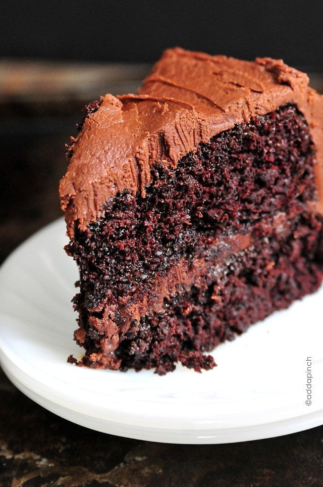

Chocolate cake recipe

The Best Chocolate Cake Recipe Ever
I’m not going to kid you, this makes a very rich,
moist chocolate cake recipe. So if you are a faint of heart chocolate cake person,
this is not the cake for you.
This is the type of cake you can bake even when all you have is a whisk and a bowl!
Ingredients
- all-purpose flour
- sugar
- unsweetened cocoa powder
- powder
- baking soda
- salt
- espresso powder – I give more information on the espresso powder below
- milk – you can also use buttermilk, almond milk, oat milk, or coconut milk
- oil – you can use vegetable, canola or melted coconut oil
- eggs – when baking, I like to use room temperature eggs
- vanilla extract
- boiling water
Step by step guide
- Prep. Preheat the oven to 350º F.
Prepare two 9-inch cake pans by spraying with baking spray or buttering and lightly flouring.
Whisk dry ingredients. Add flour, sugar, cocoa, baking powder, baking soda, salt
and espresso powder to a large bowl or the bowl of a stand mixer. Whisk through to combine or, using your paddle attachment,
stir through flour mixture until combined well.
- Mix in wet ingredients. Add milk, vegetable oil, eggs, and vanilla to flour mixture and mix together on medium speed until well combined. Reduce speed and carefully add boiling water to the cake batter until well combined.
- Bake. Distribute cake batter evenly between the two prepared cake pans. Bake for 30-35 minutes, until a toothpick or cake tester inserted in the center of the chocolate cake comes out clean.
- Frost. Remove from the oven and allow to cool for about 10 minutes, remove from the pan and cool completely. Frost with Chocolate Buttercream Frosting.